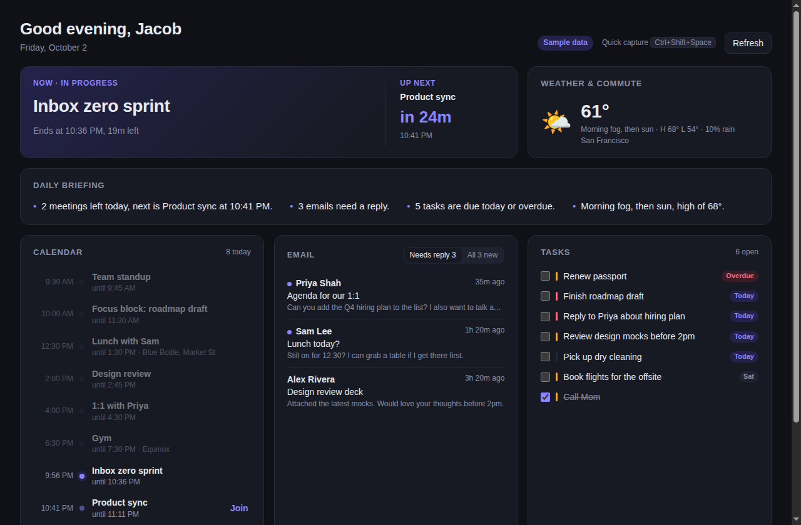

Hub
Your calendar, email, tasks and weather on one page, for Mac and Windows.
Download Hub
Hub is a desktop app that pulls your day together: your Google Calendar, the emails that need a reply, your tasks, the weather and when to leave for your next meeting. It sits in your menu bar or tray with a countdown to your next event, writes you a short briefing each morning, and helps you wrap up the day in the evening.
Everything runs on your own computer. Hub reads your calendar and email to show them to you, and it can save draft replies in Gmail for you to send yourself. It never sends email. See the privacy policy for details.